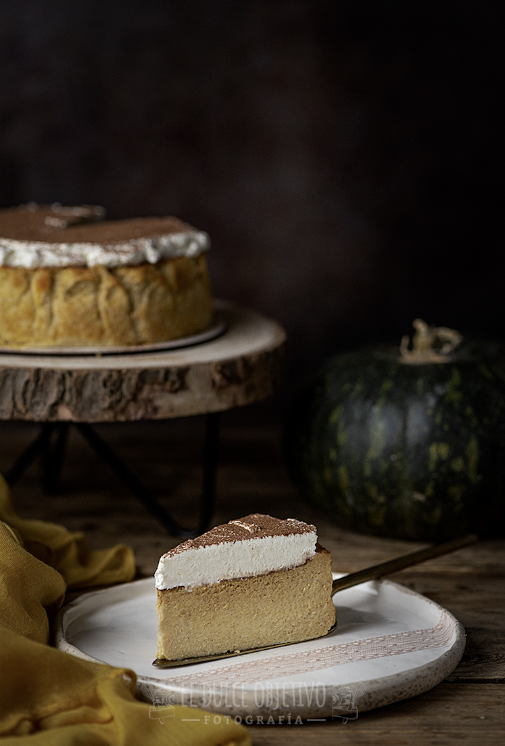

TARTA DE QUESO Y CALABAZA
Ingredientes:
- 250 gr de queso mascarpone
- 250 gr de puré de calabaza
- 250 ml de nata para montar
- 5 huevos
- 1 cucharadita de canela molida
- 15 gr de harina de maíz (Maicena)
- 150 gr de azúcar
Para la cobertura:
- 200 ml de nata para montar 35% materia grasa (para la cobertura)
- 70 gr de azúcar glas
- 1 cucharadita de cacao en polvo
- 1/2 cucharadita de canela en polvo
Preparación:
- La receta está pensada para un molde de 15 cm. Me gusta que queden con un poco de altura.
- Preparamos nuestro molde cortando papel de hornear y humedeciéndolo en agua. Se escurre bien y se coloca en el interior del molde ajustándolo lo mejor posible.
- Precalentamos el horno a 200°C con calor arriba y abajo.
- Como os he comentado antes, tendremos previamente preparada la calabaza cocida.
- Ponemos todos los ingredientes en el vaso de la batidora y batimos hasta obtener un batido liso y homogéneo.
- Vertemos todo el contenido en nuestro molde y lo llevamos al horno. Me gusta pasarlo por el colador por al batirlo queda una espumita que es posible que se nos queme en el horneado.
- Hornearemos a 200º en torno a 50 – 55 minutos.
- Si a los 30 minutos de hornear vemos que la capa superior se está tostando en exceso, ponemos un poco de papel de aluminio cubriendo el molde por arriba para evitar que se queme. ¡Ojo! esto tiene que ser rápido para que el calor del horno no se vaya.
- Al terminar el horneado dejaremos enfriar completamente en el interior del horno con la puerta de este entre abierta. De este modo evitaremos que el cambio de temperatura haga que la tarta se encoja rápidamente y se nos raje o queden esos bordes elevados tan antiestéticos.
- Sacamos del horno, cuanto esté fría, le ponemos papel film a piel y la llevamos al frigo al menos 6 horas. Si es toda la noche mejor que mejor.
- Al día siguiente solo nos queda decorar. Para ello montamos la nata (si es al 38% mejor que mejor) con el azúcar glas.
- Sacamos la tarta del frigo y desmoldamos del papel con cuidado para que no se rompa y colocamos en el plato o base en la que la vayamos a reservar. Estando bien fría se manipula perfectamente.
- Decoramos con la nata montada, de forma irregular, en este tipo de tartas no hay que ser perfeccionistas ni tener un alisado perfecto.
- Mezclamos el cacao con la canela y espolvoreamos con ayuda de un colador o una bolita de las de infusiones, esas me encantan para estas cosas.
